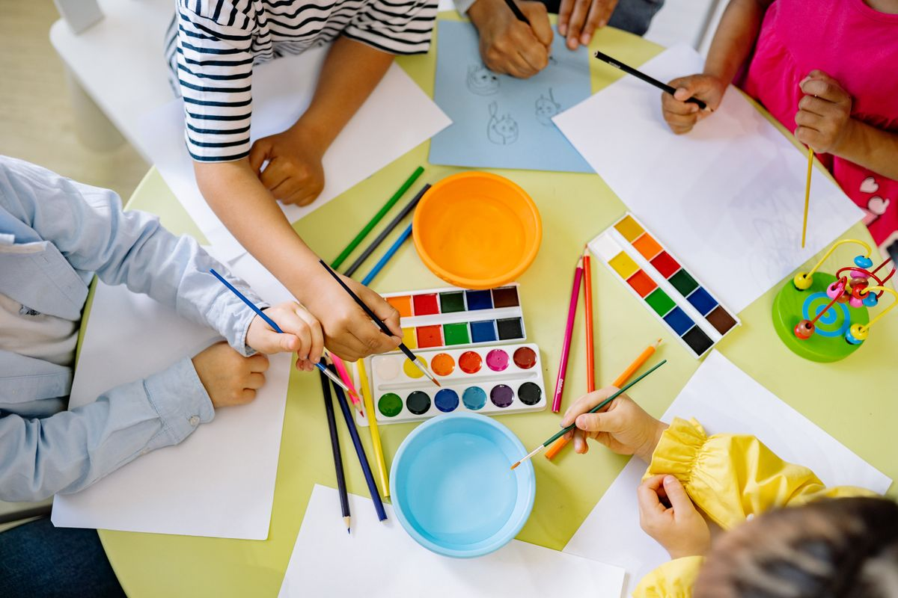

Spazio Psicologico
Colloqui individuali, di coppia e familiari per elaborare emozioni, superare momenti di crisi e prendersi cura della propria salute mentale.
ApprofondisciUn luogo accogliente dove ritrovare ascolto, equilibrio e fiducia, a ogni età.
Al Centro Alba psicologi, educatori e operatori del benessere lavorano fianco a fianco. Accompagniamo bambini, ragazzi e adulti con percorsi costruiti sulla singola persona, per affrontare i momenti difficili e coltivare serenità nella vita quotidiana.
Guardiamo a ciascuno nella sua interezza, tenendo conto delle relazioni e del contesto familiare in cui vive.

Colloqui individuali, di coppia e familiari per elaborare emozioni, superare momenti di crisi e prendersi cura della propria salute mentale.
ApprofondisciLaboratori e percorsi educativi che sostengono l'apprendimento, la creatività e le competenze relazionali di bambini e ragazzi.
ApprofondisciYoga, mindfulness e tecniche di rilassamento per ritrovare energia, ridurre lo stress e ascoltare meglio corpo e mente.
ApprofondisciDall'infanzia all'età adulta, ogni fase porta con sé domande e sfide diverse. Per questo il centro offre percorsi dedicati, che possono intrecciarsi tra loro quando serve uno sguardo più ampio.
“Ogni cambiamento inizia con un primo passo, fatto al proprio ritmo”
Crediamo che il benessere nasca dal rispetto dei tempi di ciascuno. Rallentare, osservarsi e chiedere aiuto quando serve non sono segni di debolezza, ma il modo più autentico per ritrovare le proprie risorse.
Psicologi, pedagogisti e operatori del benessere condividono lo stesso metodo: mettere la persona al centro e coordinarsi in équipe per offrire il percorso più adatto.
Lavori nell'ambito della salute, dell'educazione o del benessere? Ci farebbe piacere conoscerti.